For screen-shot slides, click here
For the YouTube narration, click here
Background
In this course, we are creating and working with code from the programming language R. However, in practice, we are not running the code directly using just the base R software. Typically, we are running an integrated development environment (IDE), which is an additional software running on top of base R.
An IDE has the responsibility to help organize and manage the projects folders, pass along lines of code being executed (run) to the underlying R software, and then return and visualize the outputs in a manner that leads to increased producitivity. Examples of IDEs include Positron, Visual Studio Code and Rstudio.
For this course, we will be using Positron as our primary IDE. For those of you who have previous R experience, you are likely more familiar with Rstudio which is also made by Posit, and is the older of the two IDEs. Why use Positron for this course then?
There are several reasons. First, Positron combines the best elements of both Rstudio (which preceeded it) and VS code (from which it’s base infrastructure was forked). In a course aimed at coding beginners, this combination is immensely helpful in bringing important elements that had been previously hidden behind several menus in Rstudio out into the open where they are immediately available, reducing complicated workarounds. In my recent experience, it has been easier to teach beginners to code well with Positron than it was previously with Rstudio.
Second, Data Science (and Bioinformatics) is increasingly moving in a multi-lingual programming direction. Flow Cytometry is not immune to this trend, Python, Julia and Rust are appearing more in Cyto posters each year. Positron is built to handle this, allowing us to bring in and use cool packages regardless of what language they are written, avoiding additional complicated workarounds to get them to work in Rstudio.
And finally, having placed so much effort into making these resources available to the wider community, I don’t want to provide all my examples using Rstudio only to find out two years from now that maintenance has been discontinued by Posit and everything needs to be remade.
Consequently, I decided to use Positron for the course. This walk-through will cover some of the main layout elements to help start build some initial familiarity with the IDE, which we will continue to build on throughout the course.
Getting Started
When opening Positron for the first time, you will see something like this. Let’s work our way around the screen, covering the major items in turn.
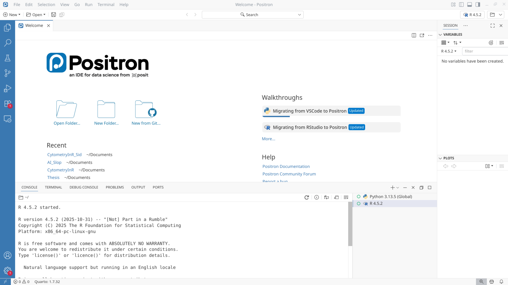
Interpreter
On the upper right, above Session/Variables tab, you have the option to select the coding language (interpreter) being used by the project folder. For most of this course, you will likely see this set to R 4.5.2 (or your current R version). If your computer has Python installed, you may also see these versions appear within the interpreter drop-down menu.

Folders
As briefly covered at the end of WorkStation walkthrough, the folders button to the right of the interpretor button allows us to open and work with Project Folders. From the drop-down, we can also Create New Folder from a template (which we will cover in the next section), or bring them in from existing GitHub repositories (as we did last section). You will also find the option to open other project folders that have been opened recently.
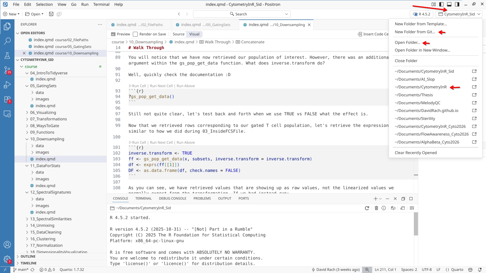
Panel
At the bottom-center of the screen you will find the Panel region. This contains several tabs (Console, Terminal, etc).

Console
At the bottom of the sceen, you will first see the Console Tab. This is the tab where your lines of code when executed (run) will appear, as well as any messages, warnings or errors that get returned. On the right side of the console, you can find several buttons, among them restart R and delete session (for when you need a fresh start), and clear console (which keeps all previously run outputs and objects, but clears away the displayed text within the console).

Terminal
Right next to the Console tab is your Terminal tab. While the console tab is primarily used to run R code within Positron, the terminal is the interface where code containing system commands directed at at your computer is entered. We will use this less frequently, primarily in two context: 1) rendering Quarto documents, and 2) commiting changes to version control. Among the buttons on the right-side of the terminal to make note of are the + button to add a new terminal, and the trash/garbage can button to kill (stop) the terminal.

The other tabs (Problems, Output, Ports, Debug Console) are used less frequently. I usually will Problems and Debug when something goes wrong with the code, as various warning and error messages will end up being displayed there.
Editor
Located above the panel section (ie, just above the console window) is the main area known as the Editor. It is typically where you end up writing your code. It displays any and all the files that you open.
For example, when I open a .png for one of my projects, the image will appear within the editor area in the middle of my screen.
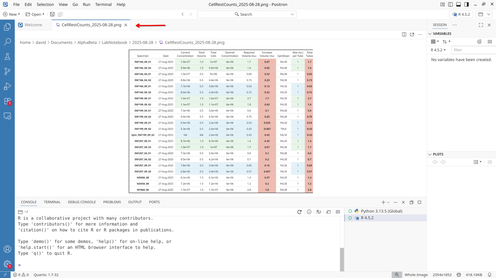
When the file I open is an .R script, I will be able to see and edit the code contained within that same area.

Should I open a Quarto markdown file (.qmd), I can see and edit both the written as well as the code chunks contained within.
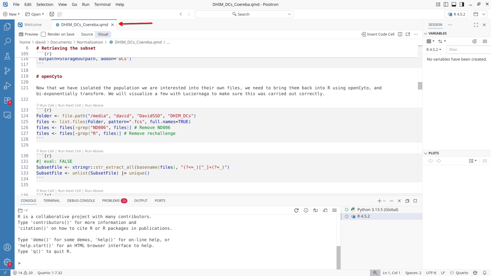
Looking below the tabs of the opened files, I can see the file.path (location) for the file I currently have open and am working on. This is denoted by the > > > interspersed with the parent folder names.

Just above the file path, and below the tabs, we find a couple buttons. Preview is used to render a Quarto document into various types of documents (including .html, .pdf or .docx) as long as no errors are encountered.

Source tab will normally be the active view, which will show everything as code/markdown

However, when we switch to Visual mode, it will visualize in a similar manner as if we had rendered the document as an .html webpage.
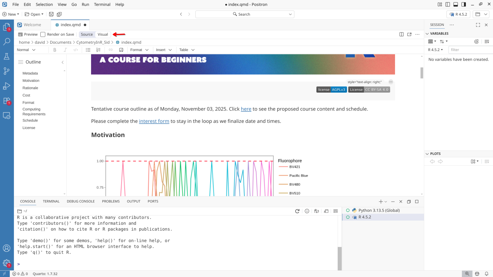
As more files are opened, they will appear as individual tabs. These can be opened and closed as need be. The color of the text also displays their saved status.
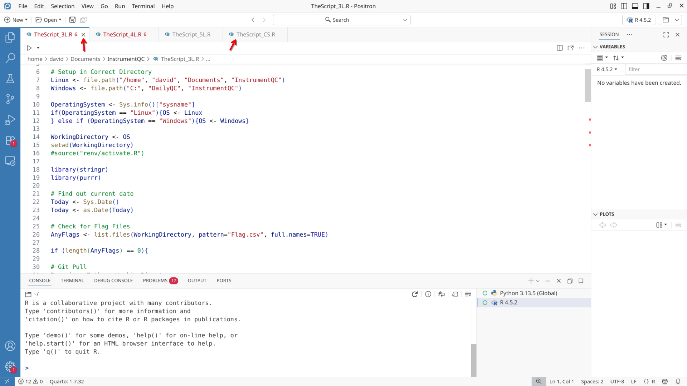
Help
When trying to evaluate how a particular function is working in R, you can hover over it and positron will open up the documentation for that particular function if available, alternatively, you can enter ?theParticularFunctionsName in the console and hit enter to similarly view what is occuring.
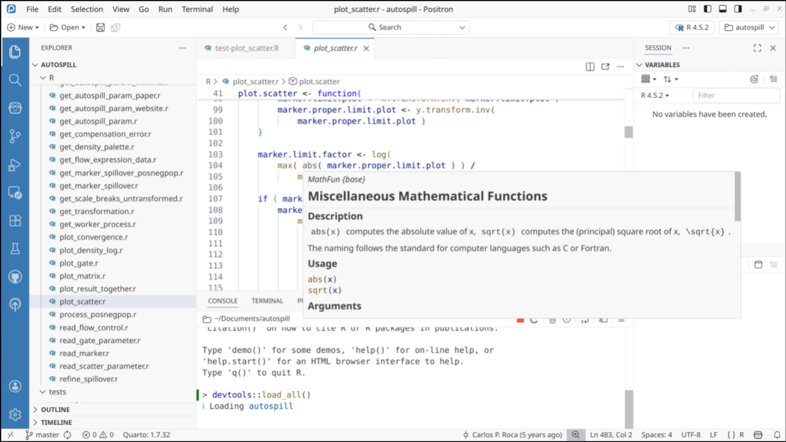
Primary Side Bar
To open a file, several options exist. If they are present within your Project folder, you can click on the pages tab on the activity bar (far upper left) and then click on the file of interest shown within the primary side bar (between the activity bar and the editor). Alternatively, the Open Folder icon on the upper-left or entering “Ctrl + O”/“Command + O” will open a pop-up to allow you to navigate and select a folder elsewhere on your computer.
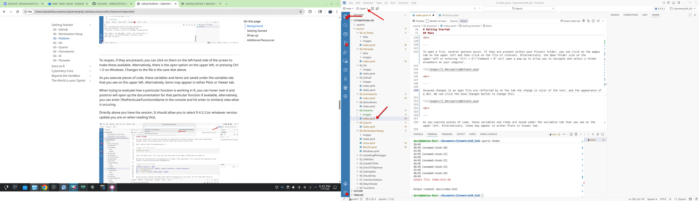
Unsaved changes to an open file are reflected by on the tab the change in color of the text, and the appearance of a dot. We can click the Save changes button to change this.

Secondary Side Bar
The secondary side bar is found on the right-side of the screen, to the right of the Editor and Panel windows. It is divided between an upper, and a lower portion.
Variables
On the upper-portion of the Secondary Side Bar, we can find the Session window, containing the Variables tab. As you run (execute) lines of code, and different variables, objects and functions are created, these become visible under the variables tab on the upper right.
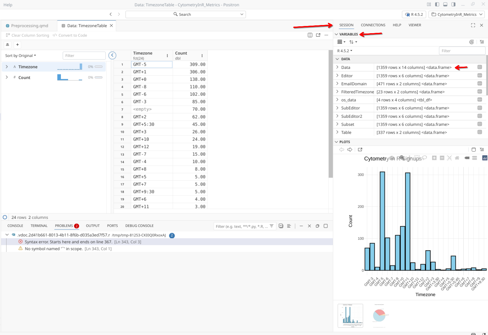
For some types of objects (generally data.frames and other matrix-like objects), you can click on their listing under variables to expand to see additional details about the object (column names, etc.) as well as view a larger version which will appear within the Editor window.
Plots
Similarly, any generated Plots or Documents will appear within the Secondary Side Bar, either under Plots (bottom) or Viewer (top) tabs.

View
On the upper bar multiple tabs can be found, which we will explore in due time. Most useful to point out is the View tab. If you accidentally close your console, session or plots window, and are trying to get them to reapper, you would need to reselect them from this tab.

Activity Bar
At the far-left side of the screen, you will find the activity bar, which contains several tabs. Depending on which one you have opened, the contents will be displayed on the primary side bar next to it.
Pages
The pages tab and the left-side bar show you everything that is currently within your project folder, including all the folders, and files. Once version control with Git is initiated, new files are relected showing up as green text and a dot, while modified tracked files are reflected by light brown text and a dot.
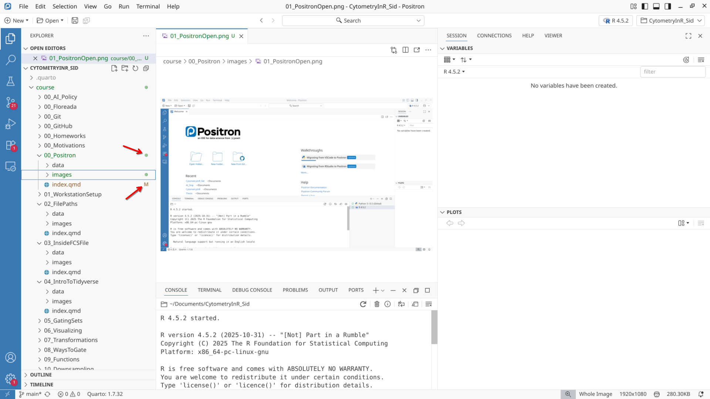
The dropdown arrows can be used to open and close specific folders to allow for better organization. There is also a scrollbar on the right-side of the side-bar to scroll through the entire folders contents.
Search
The search tab on the left side bar is something that I use routinely.
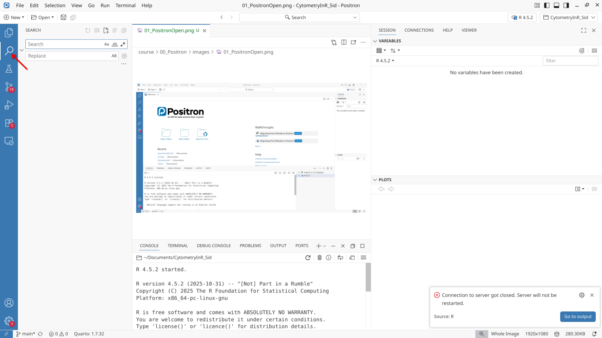
It can help locate code that you had been working on, but have since forgotten where it is at. Here is an example of finding the files where I had used a function that needed modifying within a local project folder’s files.

Similarly, if you need to replace a particular character string with another, the replace with field below can help simplify the task without having to track down and change 20 lines across 5 files.
Extensions
On the far-left side we can find the Activity bar, which contains several tabs. Which tab you have selected will then dictate the contents of your left side-bar.
Occupying the left side bar are several tabs. One of these is Extensions, which shows “Plugins” (or the VScode equivalent) that extend the functionality of Positron further. The ones you have installed may vary, but the main ones in context of this course are Air (provides color and highlights syntax for R code to make interpretation easier) as well as Quarto (for rendering the various document types).
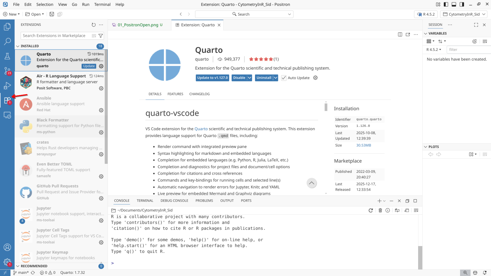
Git
The Git tab on the left side bar is where once version control is initiated for the project folder, we can see changes that have occurred to the individual files since the last commit. These changes can be added to a new commit by clicking on the + sign. This will be covered more extensively in the next section
Similarly, if you want to discard a change that has occured, the circular arrow will revert to the last commited version. Selecting and pressing the delete button will similarly work.
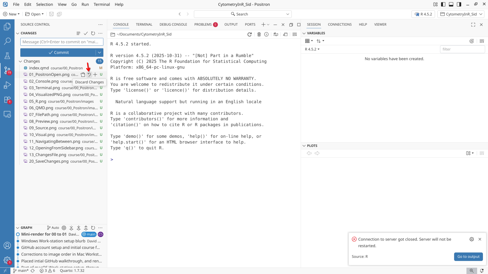
Selecting the … options will highlight all the various git functions, some of which we will cover more extensively in the next section and throughout the course.
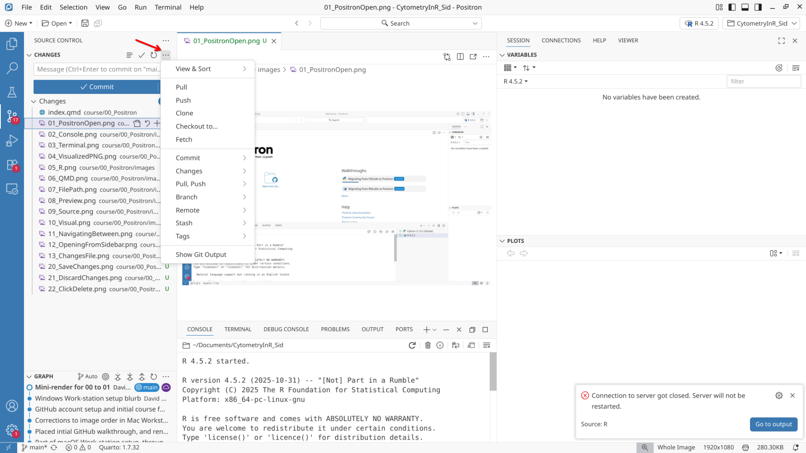
Wrap-up
In this walk-through, we looked at some of the elements within Positron. Don’t worry, you don’t need to remember them all or what they do at this point of time, these will come with practice over the first few weeks of the course.
In the next section, we will take a closer look at using the version control software Git that we have previewed here.